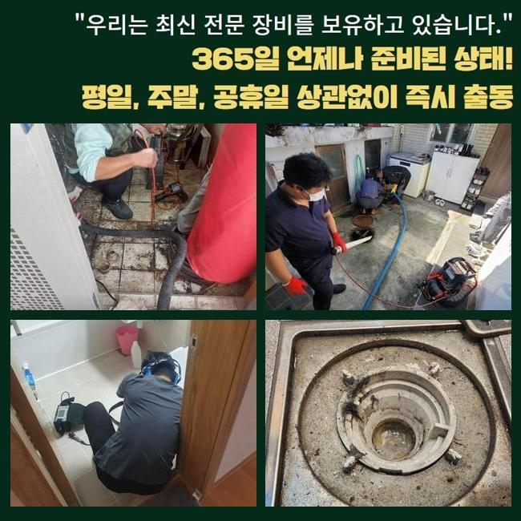
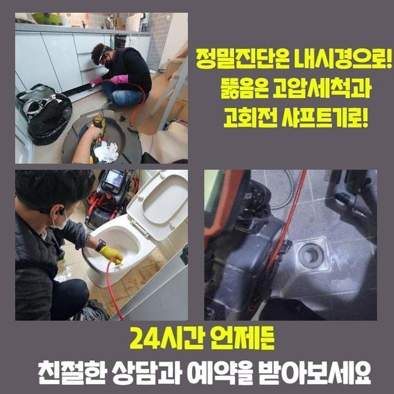
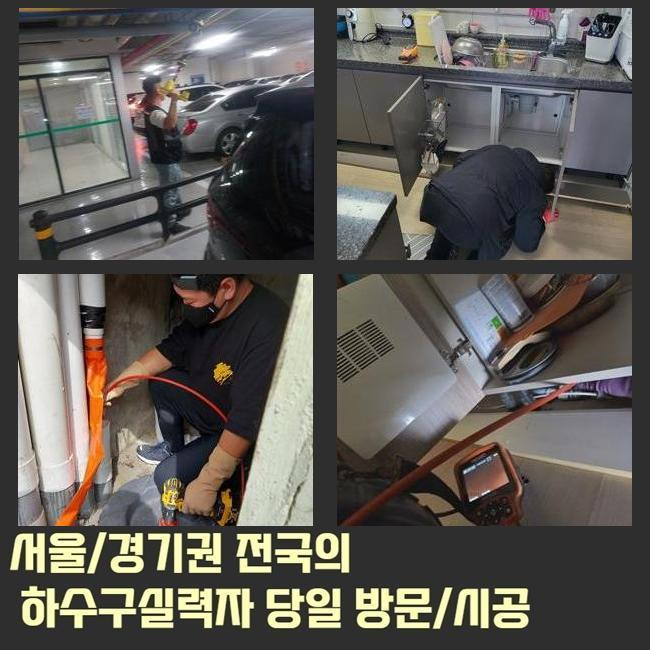
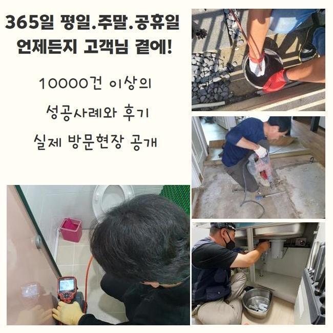
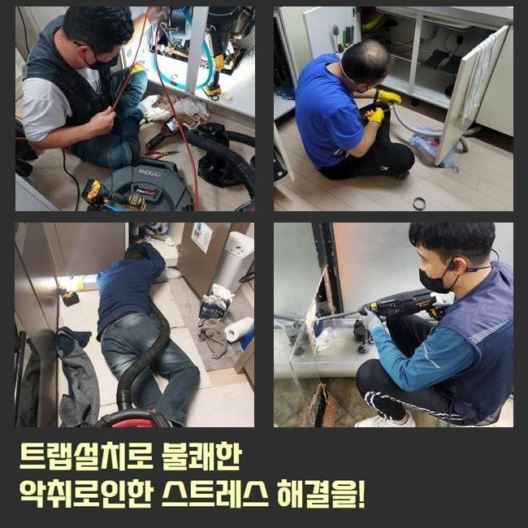

🏠 강북 수유동변기뚫음 삼각산동 냄새차단 물샘전문업체
용인 변기막힘 전문 시공 후기

📋 작업 개요
- 위치: 용인
- 서비스 유형: 변기막힘, 하수구막힘, 배관막힘, 누수수리, 역류해결, 뚫는업체, 고압세척, 설비공사, 악취차단
- 작업 일시: 2025. 2. 21. 2:27
- 업체명: 하수구수사대 (010-5615-2118)
🔍 문제 상황
강북 수유동변기뚫음 삼각산동 냄새차단 물샘전문업체
배관막힘은 살다가 한두번은 겪어보았을거라 생각하고 있어요
갑작스레 주방쪽이나 화장실의 변기에서 표출되는 하수관 막힘문제는 평범한 삶에 커다란 지장을 유발하게 되겠죠
그럼 주방시설에선 왜 막힘이 생겨나는건지 알아둘필요가 있겠는데요
주방시설은 요리중에 생기는 각종 오염물질과 기름슬러지와 같은 것들이 배수관에 적체되어 정체가 생기는거죠
이런 상황이 지속되면 배수기능이 사라질뿐만 아니라 악취까지 일어나며 노폐물들로 인해 관로가 노후화되어 누수까지 촉발할수 있어요
통상적으로 해당되는 막힘이 일어났다면 화학제품을 부어서 정리하려고 하시죠
그렇지만 그런 방안은 미봉책에 불과하고 본질적 사유를 정리하지않으면 유사한 사태가 재발하게 되겠죠
차단을 만든 잔재들이 관의 밑부분에 존재한다면 육안으로 관찰하거나 처리하기 힘겹기 때문이랍니다
그것에 더하여 서툴게 수리를 한다면 반대로 배관을 훼손하거나 침전물들을 온당하게 처리하지 못하게되는 거죠
그러하기에 관로의 정체가 발발하였다면 배관전문업체에게 의뢰해서 분명하고 깔끔하게 정리하는게 바람직하다고 말씀드릴수 있어요

🔎 원인 분석
💡 전문가 진단: 정밀 진단 장비를 사용하여 슬러지의 고착 여부를 판명하고 타격/세척 작업을 실시했습니다.
어저께 저흰 배관문제 이슈로 시공문의를 받았어요
고객께선 욕실배관에서 발발한 물막힘상황 때문에 역류 및 악취발생이 심하여 일상에 곤란함을 감당하고 있으셨죠
오취가 심각하여 일상생활을 해나가기가 곤란한 지경이었고 역류증상까지 발발하여 집안이 오손되는 사태에 닿게 됐다 말하셨습니다
의뢰인의 어려움을 되도록 빨리 처리하기 위해서 곧바로 말씀하신 곳으로 이동했어요
댁에 당도한 뒤에 의뢰인분께 대체적인 설명을 드리고 발발한 문제점을 면밀히 분석해보았어요
의뢰자께서는 욕실에서 배수가 아예 안되고 역류하는 상황까지 발발하여 실내가 더러워진 상황이라 말하셨어요
한달전부터 미세한 막힘현상이 보였는데 방치하였다가 더욱더 악화한 상황이었죠
이럴때에는 간단히 뚫음을 실행하는것으론 본질적인 해결에 다가서기 힘들죠
침전물이 관로에 단단하게 접착된거라 내부의 모습을 확실하게 파악한뒤에 마땅한 도구와 방안으로 시공에 나서야 하겠습니다
깊은지점에서 발현된 고장은 직시하여 조사하기 힘들때가 많죠
그러한 이유로 저희팀에선 배관카메라를 이용하여 배수관내측의 정황을 정밀하게 검사하게 되었던거죠
배관카메라로 확인하니 관로안에는 장기간 누증된 음식 잔재들과 유분찌꺼기들이 뒤섞여 물길을 완전하게 차단시키고 있었죠

🔧 작업 과정
또한 침전물들이 견고하게 자리를 잡아서 단순히 물세정으론 해소가 어려웠답니다
진단을 끝낸다음에 분쇄장비를 가동시켜 파이프에 강력하게 붙은 잔재들을 처치하는 시공을 속행했어요
해당 기기는 배관안에 고착화된 오물들을 빠르게 파쇄하고 소멸시킬수 있기 때문에 내부 침전물들이 단단하게 굳어져 있을때 커다란 역할을 수행합니다
샤프트기기는 회전능력을 통하여 찌꺼기들을 부숴서 배수관에 들러붙은 단단한 석회물질이나 기름슬러지를 깨끗이 정리할수 있죠
그렇긴하지만 조절을 잘못하여 시공을 이어나간다면 파이프가 고장날수도 있으므로 전문적 테크닉과 주의깊은 시공이 요망되죠
이번에 방문한 곳은 또 잔재들이 배관에 단단하게 고정되어 있었기에 한두번의 작업으론 제거하기 어려웠죠
주변에 붙은 소석회물질은 한층더 해당 형편을 악화하게 만들었어요
그러므로 저희들은 물세척 공정과 샤프트기기를 병행 사용하면서 노폐물을 더욱 잘게 부수고 온전히 제거하는 작업을 단행하였어요
강인한 파워로 침전물을 없앨때는 그것들이 주변으로 흩날리지 않게 주의를 기울여야 해요
슬러지가 주위로 퍼져나가 주변부가 심각하게 오손된다면 처리가 곤란해질수도 있어 집중해서 작업해나가야 하는거죠
그래서 세척중 그러한 사태를 막기 위하여 보호작업을 시행했고 의뢰인분께서 우려하지 않으시도록 세심하게 과정을 시행하였죠
찌꺼기를 제거하고나서 거듭 내시경기기를 넣어 파이프를 검사하였죠
안쪽에 머물고있는 석회물질이나 부가적인 트러블을 조사하는건 상당히 중요하다고 볼수 있어요
금번의 업무에서는 수차례 배수관 안쪽을 검사하고 연쇄적으로 발발하기 쉬운 트러블을 예방했어요
이물들이 전면적으로 정리된걸 파악한뒤에 수돗물을 내려보내며 온전히 뚫렸는지 테스트해 보았죠
신속하게 물이 빠지는걸 직각적으로 입증하였죠
배수공으로 폐수가 시원스럽게 사라지는걸 고객님도 직관하셨으며 확실하게 마무리되었다는 걸 확인하였죠
사태를 방치하는 바람에 침전물이 한층더 늘어난다면 주변이웃들에게 고장상황이 전이될수 있죠
그렇게 된다면 생각해야한 내용이 커질것이 자명하므로 서둘러서 수리를 받으시길 바라요


✅ 작업 완료
그리고 하수구막힘은 생활하시는데 불편함을 초래하기에 되도록 빨리 고치시는게 좋답니다
관로막힘 상황이 길어진다면 고약한 냄새는 물론 관파손으로 생긴 누설증상까지 일어날수 있다는것도 생각해야 돼요
공사전에는 필히 적합한 장비들을 갖추고 있어야 돼요
그것들이 충분히 없는경우 관측을 적절히 하지못하는 상황이 발현되어 시간적 손실까지 야기할수 있습니다
갑작스럽게 발생된 배관정체로 수리가 필요하시다면 저희들에게 부담없이 전화해 주세요



⚠️ 베란다 누수 및 방수 관리 방법
- ✅ 비가 많이 올 때 창틀 주변이나 아래층 천장에 얼룩이 생기는지 정기적으로 확인해 보세요.
- ✅ 우수관 주변 실리콘 마감이 들뜨거나 깨진 틈새가 있는지 손상 여부를 수시로 체크하세요.
- ✅ 베란다 바닥 타일의 줄눈(메지)이 소실되면 그 틈으로 물이 침투하여 누수가 유발됩니다.
- ✅ 누수 의심 증상 발견 시 방치하면 아래층 손실이 커지므로 즉시 전문가의 진단을 받으십시오.
💡 핵심 정리
- 확실한 장비 작업(내시경 점검 및 샤프트 스케일링)으로 원인을 뿌리 뽑습니다.
- 작업 후 1년 이내에 동일한 부위 재발 시 100% 무상 A/S 서비스를 보장합니다.
- 서울 · 경기 · 인천 전 지역에 24시간 언제든 긴급 출동할 수 있도록 항시 대기 중입니다.
❓ 자주 묻는 질문 (FAQ)
🚨 용인 변기막힘 문제로 고민이신가요?
정확한 원인 진단과 확실한 시공으로 재발 없는 해결을 약속드립니다.
24시간 긴급 출동 | 서울 · 경기 · 인천 전지역 | 1년 내 재발 시 무상 A/S